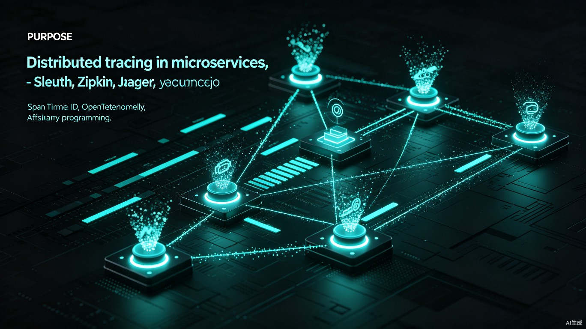

在微服务架构中，一次用户请求可能跨越数十个服务节点，涉及同步调用、异步任务、消息消费等多种交互模式。当系统出现异常或性能瓶颈时，如果没有完整的调用链路追踪，排查问题无异于大海捞针。Spring Cloud Sleuth与Zipkin/Jaeger的组合为同步调用提供了优雅的解决方案，但异步场景下的Trace传递却成为许多团队的盲区。本文将从原理到实践，深入剖析异步任务链路追踪的核心挑战与完整解决方案。
一、分布式追踪的基石：TraceId与Span
在展开异步场景之前，必须先理解分布式追踪的基础模型。Google的Dapper论文定义了Trace、Span、Annotation三个核心概念，这一模型被OpenTracing和OpenTelemetry继承，并成为行业事实标准。
1.1 追踪模型的核心元素
一条Trace代表一次完整的请求链路，由全局唯一的TraceId标识。Trace由多个Span组成，每个Span代表链路中的一个操作单元（如一次HTTP调用、一次数据库查询）。Span之间通过ParentSpanId建立层级关系，形成树状结构。
traceId: abc123
spanId: 001] --> B[Span: Auth Service
parentId: 001
spanId: 002] A --> C[Span: Order Service
parentId: 001
spanId: 003] C --> D[Span: DB Query
parentId: 003
spanId: 004] C --> E[Span: MQ Publish
parentId: 003
spanId: 005] E -.异步.-> F[Span: MQ Consumer
parentId: 005
spanId: 006] F --> G[Span: Inventory Service
parentId: 006
spanId: 007] style A fill:#0a0a0f,stroke:#00f0ff,color:#e8e8ec style G fill:#0a0a0f,stroke:#00f0ff,color:#e8e8ec
每个Span不仅记录了起止时间，还携带了丰富的标签（Tags）和日志（Logs）。标签是键值对，用于描述Span的静态属性，如HTTP方法、URL路径、数据库表名；日志则记录Span执行过程中的事件，如SQL执行开始、缓存命中、异常抛出。这些元数据构成了问题排查的关键线索。
1.2 传播协议：B3与W3C Trace Context
TraceId需要在服务间传递才能串联完整链路。目前主流的传播协议有两种：
B3协议：由Twitter开源，Sleuth默认采用。通过HTTP Header传递TraceId、SpanId、ParentSpanId和采样标记：
- X-B3-TraceId: 128位或64位TraceId
- X-B3-SpanId: 64位SpanId
- X-B3-ParentSpanId: 父SpanId
- X-B3-Sampled: 是否采样（1/0）
- X-B3-Flags: 调试标志
W3C Trace Context：由W3C标准化的协议，逐渐被业界采纳。使用单个Header traceparent 和可选的 tracestate：
- traceparent: 00-traceId-spanId-flags
Sleuth从3.x版本开始同时支持B3和W3C，可以通过配置切换：
spring:
sleuth:
propagation:
type: W3C,B3 # 同时支持两种协议，向下兼容
1.3 Spring Cloud Sleuth的自动化能力
Spring Cloud Sleuth通过自动配置和AOP代理，在Spring生态中实现了追踪的无侵入接入：
- HTTP调用：通过
RestTemplate、WebClient、Feign的拦截器自动注入TraceId到HTTP Header - 消息队列：通过Spring Integration或Spring Cloud Stream的Channel Interceptor传递追踪信息
- 定时任务：
@Scheduled方法自动创建新的Span - 数据库访问：通过代理DataSource记录SQL执行Span
// 自动注入的Tracer，用于手动创建Span
@Autowired
private Tracer tracer;
public void customOperation() {
Span span = tracer.nextSpan().name("custom-operation").start();
try (Tracer.SpanInScope ws = tracer.withSpanInScope(span)) {
// 业务逻辑
performBusinessLogic();
} finally {
span.end();
}
}
Sleuth的自动化能力覆盖了同步调用的绝大多数场景，但当请求进入异步线程池或消息队列后，自动追踪链就会断裂，需要开发者手动桥接。
二、异步场景下的追踪困境
同步调用链路的追踪相对简单——TraceId通过HTTP Header或服务间调用的上下文自然传递。但异步场景打破了这种连续性：线程切换、任务入队、延迟执行、跨进程消费，每一步都可能丢失追踪上下文。
2.1 线程切换导致的上下文丢失
在Java中，追踪上下文通常存储在ThreadLocal中。ThreadLocal的机制决定了其数据仅在当前线程内可见，当任务从主线程提交到线程池时，子线程无法访问父线程的ThreadLocal数据。
@Service
public class OrderService {
@Autowired
private ThreadPoolExecutor executor;
public void createOrder(Order order) {
// 主线程中存在TraceId
log.info("主线程TraceId: {}", MDC.get("traceId"));
executor.submit(() -> {
// 子线程中TraceId为null
log.info("子线程TraceId: {}", MDC.get("traceId"));
// 这里的日志无法关联到原始请求链路
sendNotification(order);
});
}
}
2.2 @Async注解的盲区
Spring的@Async注解是异步编程的常用方式，但它默认不会传递追踪上下文：
@Service
public class NotificationService {
@Async("taskExecutor")
public CompletableFuture<Void> sendEmail(Order order) {
// 此方法的Span与调用方断开连接
log.info("发送邮件通知: {}", order.getId());
return CompletableFuture.completedFuture(null);
}
}
当sendEmail方法在另一个线程中执行时，Sleuth无法自动知道它应该继承哪个父Span，因此在Zipkin中会看到一个孤立的Trace，或者更糟——完全没有Trace记录。
2.3 消息队列消费的链路断裂
生产者发送消息时可能携带了Trace信息，但消费者在另一个进程中消费消息，需要通过消息属性（Message Properties）重建追踪上下文。如果消费者端没有正确提取和恢复上下文，链路就会在MQ处断裂。
携带traceId=abc123
spanId=005 Note over MQ: 消息属性中存储追踪信息 C->>MQ: 拉取消息 C->>C: 未能从消息属性提取traceId
创建新的独立Trace Note over C: 链路断裂！无法关联到生产者
三、ThreadLocal到TransmittableThreadLocal：上下文传递的进化
要解决线程池中的上下文传递问题，必须突破ThreadLocal的线程边界限制。阿里开源的TransmittableThreadLocal（TTL）为此提供了优雅的解决方案。
3.1 TTL的工作原理
TTL在任务提交时捕获当前线程的上下文快照，在任务执行前将快照恢复到子线程，执行完成后清理，确保上下文不会污染线程池中的其他任务。
TTL.set] -->|提交任务| B[线程池队列] B -->|取出执行| C[TTL恢复上下文
run前] C --> D[执行业务逻辑] D --> E[TTL清理上下文
run后] E --> F[线程回归池] style A fill:#0a0a0f,stroke:#00f0ff,color:#e8e8ec style D fill:#0a0a0f,stroke:#00f0ff,color:#e8e8ec
3.2 Sleuth与TTL的集成
首先引入TTL依赖：
<dependency>
<groupId>com.alibaba</groupId>
<artifactId>transmittable-thread-local</artifactId>
<version>2.14.5</version>
</dependency>
然后配置支持TTL的线程池：
@Configuration
public class TtlThreadPoolConfig {
@Bean(name = "ttlExecutor")
public Executor ttlExecutor() {
ThreadPoolExecutor executor = new ThreadPoolExecutor(
4, 8, 60, TimeUnit.SECONDS,
new LinkedBlockingQueue<>(1000),
new ThreadFactoryBuilder().setNameFormat("ttl-pool-%d").build(),
new ThreadPoolExecutor.CallerRunsPolicy()
);
// 使用TtlExecutors包装，实现上下文传递
return TtlExecutors.getTtlExecutor(executor);
}
}
对于Sleuth的MDC上下文，需要额外配置：
@Component
public class MdcTtlInitializer implements ApplicationRunner {
@Override
public void run(ApplicationArguments args) {
// 注册MDC传递器
TransmittableThreadLocal.Transmitter.registerTransmittee(
new MdcTransmittee()
);
}
}
public class MdcTransmittee implements Transmittee<Map<String, String>> {
@Override
public Map<String, String> capture() {
return MDC.getCopyOfContextMap();
}
@Override
public Map<String, String> replay(Map<String, String> captured) {
Map<String, String> backup = MDC.getCopyOfContextMap();
if (captured != null) {
MDC.setContextMap(captured);
}
return backup;
}
@Override
public void restore(Map<String, String> backup) {
if (backup == null) {
MDC.clear();
} else {
MDC.setContextMap(backup);
}
}
}
四、@Async注解追踪的完整方案
要让@Async方法正确继承父Span，需要自定义AsyncConfigurer和Executor。
4.1 支持Sleuth的Async配置
@Configuration
@EnableAsync
public class AsyncConfig implements AsyncConfigurer {
@Autowired
private BeanFactory beanFactory;
@Override
@Bean(name = "sleuthAsyncExecutor")
public Executor getAsyncExecutor() {
ThreadPoolTaskExecutor executor = new ThreadPoolTaskExecutor();
executor.setCorePoolSize(4);
executor.setMaxPoolSize(8);
executor.setQueueCapacity(500);
executor.setThreadNamePrefix("sleuth-async-");
executor.initialize();
// 使用Sleuth的LazyTraceExecutor包装，确保Trace传递
return new LazyTraceExecutor(beanFactory, executor);
}
@Override
public AsyncUncaughtExceptionHandler getAsyncUncaughtExceptionHandler() {
return (throwable, method, params) -> {
log.error("异步方法执行异常: {}.{}", method.getDeclaringClass().getName(), method.getName(), throwable);
};
}
}
LazyTraceExecutor是Sleuth提供的工具类，它会自动在任务提交时捕获当前Span，并在执行时恢复上下文。
4.2 CompletableFuture的追踪封装
如果使用CompletableFuture进行异步编排，原生的supplyAsync和thenApply也会丢失上下文。可以封装一个支持追踪的工具类：
@Component
public class TracedCompletableFuture {
@Autowired
private Tracer tracer;
public <T> CompletableFuture<T> supplyAsync(Supplier<T> supplier, Executor executor) {
Span currentSpan = tracer.currentSpan();
return CompletableFuture.supplyAsync(() -> {
try (Tracer.SpanInScope ws = tracer.withSpanInScope(currentSpan)) {
return supplier.get();
}
}, executor);
}
public <T, U> CompletableFuture<U> thenApply(
CompletableFuture<T> future,
Function<T, U> function) {
Span currentSpan = tracer.currentSpan();
return future.thenApply(t -> {
try (Tracer.SpanInScope ws = tracer.withSpanInScope(currentSpan)) {
return function.apply(t);
}
});
}
public <T> CompletableFuture<T> whenComplete(
CompletableFuture<T> future,
BiConsumer<T, Throwable> action) {
Span currentSpan = tracer.currentSpan();
return future.whenComplete((t, throwable) -> {
try (Tracer.SpanInScope ws = tracer.withSpanInScope(currentSpan)) {
action.accept(t, throwable);
}
});
}
}
使用示例：
@Service
public class OrderProcessService {
@Autowired
private TracedCompletableFuture tracedFuture;
@Autowired
@Qualifier("sleuthAsyncExecutor")
private Executor executor;
public CompletableFuture<OrderResult> processOrder(Order order) {
return tracedFuture.supplyAsync(() -> validateOrder(order), executor)
.thenCompose(validated -> tracedFuture.supplyAsync(() -> saveOrder(validated), executor))
.thenCompose(saved -> tracedFuture.supplyAsync(() -> notifyWarehouse(saved), executor))
.thenApply(result -> new OrderResult(result.getId(), "SUCCESS"));
}
}
五、消息队列消费端的链路打通
MQ是异步架构的核心组件，也是链路追踪最容易断裂的环节。生产者需要在消息属性中写入追踪信息，消费者需要在消费开始时提取并恢复上下文。
5.1 Kafka生产者的追踪注入
@Component
public class TracedKafkaProducer {
@Autowired
private KafkaTemplate<String, String> kafkaTemplate;
@Autowired
private Tracer tracer;
public void send(String topic, String message) {
Span span = tracer.nextSpan().name("kafka-send").start();
try (Tracer.SpanInScope ws = tracer.withSpanInScope(span)) {
// 构建带有追踪信息的Header
RecordHeaders headers = new RecordHeaders();
headers.add("X-B3-TraceId", span.context().traceId().getBytes());
headers.add("X-B3-SpanId", span.context().spanId().getBytes());
headers.add("X-B3-ParentSpanId",
span.context().parentId() != null ? span.context().parentId().getBytes() : null);
headers.add("X-B3-Sampled", span.context().sampled() ? "1".getBytes() : "0".getBytes());
ProducerRecord<String, String> record = new ProducerRecord<>(
topic, null, null, message, headers
);
kafkaTemplate.send(record).addCallback(
result -> span.tag("kafka.result", "success").end(),
failure -> {
span.tag("kafka.error", failure.getMessage());
span.error(failure);
span.end();
}
);
}
}
}
5.2 Kafka消费者的上下文恢复
@Component
public class TracedKafkaConsumer {
@Autowired
private Tracer tracer;
@Autowired
private SpanCustomizer spanCustomizer;
@KafkaListener(topics = "order-events", groupId = "order-processor")
public void consume(ConsumerRecord<String, String> record) {
// 从消息Header中提取追踪信息
Headers headers = record.headers();
String traceId = getHeaderValue(headers, "X-B3-TraceId");
String spanId = getHeaderValue(headers, "X-B3-SpanId");
String parentSpanId = getHeaderValue(headers, "X-B3-ParentSpanId");
boolean sampled = "1".equals(getHeaderValue(headers, "X-B3-Sampled"));
// 构建TraceContext
TraceContext parentContext = TraceContext.newBuilder()
.traceId(traceId)
.spanId(parentSpanId != null ? parentSpanId : traceId)
.sampled(sampled)
.build();
// 创建子Span，继承生产者链路
Span span = tracer.nextSpanWithParent(parentContext).name("kafka-consume").start();
try (Tracer.SpanInScope ws = tracer.withSpanInScope(span)) {
spanCustomizer.tag("kafka.topic", record.topic());
spanCustomizer.tag("kafka.partition", String.valueOf(record.partition()));
spanCustomizer.tag("kafka.offset", String.valueOf(record.offset()));
processMessage(record.value());
} catch (Exception e) {
span.error(e);
throw e;
} finally {
span.end();
}
}
private String getHeaderValue(Headers headers, String key) {
Header header = headers.lastHeader(key);
return header != null ? new String(header.value()) : null;
}
private void processMessage(String message) {
// 业务处理逻辑
}
}
5.3 使用Spring Cloud Stream简化MQ追踪
如果使用Spring Cloud Stream，追踪上下文的传递可以更加自动化。只需引入对应Binder的Sleuth集成：
<dependency>
<groupId>org.springframework.cloud</groupId>
<artifactId>spring-cloud-sleuth-stream</artifactId>
</dependency>
配置消息通道：
spring:
cloud:
stream:
bindings:
orderOutput:
destination: order-events
content-type: application/json
orderInput:
destination: order-events
group: order-processor
kafka:
binder:
brokers: localhost:9092
Spring Cloud Stream会自动在消息头中注入和提取Trace信息，开发者无需手动处理Header：
@EnableBinding(OrderProcessor.class)
public class OrderEventHandler {
@StreamListener(OrderProcessor.INPUT)
public void handleOrderEvent(@Payload OrderEvent event) {
// Trace上下文已自动恢复，日志会关联到正确的链路
log.info("处理订单事件: {}", event.getOrderId());
// 业务逻辑...
}
}
public interface OrderProcessor {
String INPUT = "orderInput";
String OUTPUT = "orderOutput";
@Input(INPUT)
SubscribableChannel input();
@Output(OUTPUT)
MessageChannel output();
}
六、跨服务TraceId传递的最佳实践
6.1 Feign客户端的自动传递
Spring Cloud Sleuth会自动为Feign客户端添加追踪Header，无需额外配置：
@FeignClient(name = "inventory-service", fallback = InventoryFallback.class)
public interface InventoryClient {
@PostMapping("/api/inventory/deduct")
Result<Void> deduct(@RequestBody InventoryDeductRequest request);
}
如果需要在Header中添加自定义追踪字段，可以配置RequestInterceptor：
@Configuration
public class FeignTraceConfig {
@Bean
public RequestInterceptor traceIdInterceptor() {
return template -> {
String traceId = MDC.get("traceId");
if (traceId != null) {
template.header("X-Custom-TraceId", traceId);
template.header("X-Request-Source", "order-service");
}
};
}
}
6.2 WebFlux异步Web框架的追踪
在响应式编程模型中，上下文存储在Reactor Context而非ThreadLocal中。Sleuth通过ReactorSleuth提供了响应式支持：
@Service
public class ReactiveOrderService {
@Autowired
private WebClient webClient;
public Mono<Order> fetchOrder(String orderId) {
return webClient.get()
.uri("/api/orders/{id}", orderId)
.retrieve()
.bodyToMono(Order.class)
// Sleuth自动传递Trace到下游
.transform(WebFluxSleuthOperators.traceWebClient(
tracer, WebClient.Builder.class
));
}
public Flux<OrderEvent> streamEvents() {
return Flux.interval(Duration.ofSeconds(1))
.flatMap(i -> fetchOrder("order-" + i))
// 确保每个元素都在正确的Trace上下文中执行
.transform(WebFluxSleuthOperators.traceFlux(tracer));
}
}
6.3 线程上下文传递的完整示意图
TraceId: abc123] --> B[同步处理] B --> C[提交任务到线程池] C --> D[提交MQ消息] end subgraph 线程池线程 E[TTL恢复上下文
TraceId: abc123] --> F[异步任务执行] F --> G[调用下游服务
Header携带TraceId] end subgraph MQ消费线程 H[从消息Header提取
TraceId: abc123] --> I[创建子Span] I --> J[消费者业务逻辑] J --> K[写入数据库
Span自动嵌套] end D -.->|消息属性| H C -.->|TtlExecutors| E style A fill:#0a0a0f,stroke:#00f0ff,color:#e8e8ec style G fill:#0a0a0f,stroke:#00f0ff,color:#e8e8ec style K fill:#0a0a0f,stroke:#00f0ff,color:#e8e8ec
七、Zipkin与Jaeger的接入对比
追踪数据需要收集和可视化，Zipkin和Jaeger是两款主流的APM工具。
7.1 配置对比
| 特性 | Zipkin | Jaeger |
|---|---|---|
| 后端存储 | In-Memory/MySQL/ES/Cassandra | ES/Cassandra/Badger |
| 采样策略 | 概率采样/限速采样 | 概率采样/限速/自适应采样 |
| UI功能 | 基础依赖分析 | 更丰富的火焰图 |
| 协议支持 | HTTP/Kafka | HTTP/gRPC |
| Kubernetes集成 | 一般 | 优秀（Operator） |
| OpenTelemetry | 支持 | 原生支持 |
7.2 Zipkin Server配置
# application.yml
spring:
zipkin:
base-url: http://zipkin-server:9411
sender:
type: kafka # 或使用rabbit/web
kafka:
topic: zipkin
sleuth:
sampler:
probability: 0.1 # 10%采样率，生产环境建议降低
enabled: true
async:
enabled: true # 启用异步配置
messaging:
enabled: true # 启用消息追踪
7.3 Jaeger Agent配置
# application.yml
opentracing:
jaeger:
enabled: true
service-name: order-service
udp-sender:
host: jaeger-agent
port: 6831
probabilistic-sampler:
sampling-rate: 0.1
log-spans: true
八、实际踩坑案例：当追踪遇上现实
理论方案在实际落地时总会遇到各种意外。以下是几个真实的踩坑案例，希望能帮助读者少走弯路。
8.1 线程池复用导致的Trace串线
某团队在接入TTL后发现，偶尔会出现完全无关的请求共享同一个TraceId的诡异现象。排查后发现，问题出在CompletableFuture的线程切换上：
// 错误示例：thenApply会在ForkJoinPool中执行，未经过TtlExecutors包装
CompletableFuture.supplyAsync(() -> fetchData(), ttlExecutor)
.thenApply(data -> transform(data)) // 这里丢失了上下文！
.thenAccept(result -> save(result));
thenApply默认在ForkJoinPool.commonPool()中执行，该线程池未被TtlExecutors包装，因此上下文丢失。解决方案是始终指定自定义的Executor：
CompletableFuture.supplyAsync(() -> fetchData(), ttlExecutor)
.thenApplyAsync(data -> transform(data), ttlExecutor) // 指定Executor
.thenAcceptAsync(result -> save(result), ttlExecutor);
8.2 MQ消费端的重复Trace问题
某系统的Kafka消费者在处理消息时，每条消息都生成了独立的Trace，无法与生产端关联。经过排查，发现消费者使用了@KafkaListener的手动Ack模式，但在手动提交Offset之前抛出了异常，导致Sleuth的Span未正确结束。
正确的做法是确保Span的生命周期与消息处理逻辑严格绑定：
@KafkaListener(topics = "events")
public void consume(ConsumerRecord<String, String> record) {
Span span = createConsumerSpan(record);
try (Tracer.SpanInScope ws = tracer.withSpanInScope(span)) {
process(record);
ack(record); // 确认消费成功
} catch (Exception e) {
span.error(e);
nack(record); // 拒绝消息，进入重试
throw e;
} finally {
span.end(); // 无论成功失败，都必须结束Span
}
}
8.3 追踪数据导致的内存泄漏
某服务在开启全量采样后，运行数小时便出现OOM。分析堆转储发现，大量Span对象积压在内存中未被释放。根本原因是自定义的Span创建后未调用end()，导致Brave的PendingSpans Map持续增长。
九、生产环境的调优与陷阱
9.1 采样率的权衡
100%采样在开发环境没有问题，但在生产高流量系统中会导致： - 追踪数据淹没存储系统 - 网络带宽被Span上报占用 - 应用CPU因序列化Span而飙升
建议按环境设置采样策略：
@Configuration
public class SamplingConfig {
@Bean
public Sampler customSampler(@Value("${spring.profiles.active:default}") String profile) {
if ("prod".equals(profile)) {
// 生产环境：1%概率采样 + 每秒最多100条
return RateLimitingSampler.create(100);
} else if ("pre".equals(profile)) {
// 预发环境：10%采样
return ProbabilityBasedSampler.create(0.1f);
}
// 开发测试环境：全量采样
return ProbabilityBasedSampler.create(1.0f);
}
}
9.2 异步任务的Span生命周期
异步Span的生命周期管理容易出错，常见陷阱包括：
| 问题 | 原因 | 解决方案 |
|---|---|---|
| Span未结束 | 异常抛出时忘记调用span.end() | 使用try-finally或try-with-resources |
| Span时间异常 | 异步任务延迟执行导致Span时长失真 | 在真正执行时start Span |
| 孤儿Span | 父Span已结束但子Span仍在运行 | 确保Span层级关系正确 |
| MDC污染 | 线程池复用导致MDC残留 | TTL自动清理或使用MDC.clear() |
9.3 追踪对系统性能的影响
分布式追踪并非零成本。每创建一个Span，系统需要： - 生成唯一ID（CPU消耗） - 记录起止时间戳（时钟调用） - 序列化Span为JSON/Thrift/Protobuf（CPU和内存消耗） - 通过网络发送到Collector（网络带宽和延迟）
在压测中，开启全量追踪通常会导致： - 吞吐量下降5%-15% - P99延迟增加1-5ms - 内存使用增加约10%
因此，生产环境务必启用采样，并将Collector部署在就近的网络区域，避免跨可用区上报。
9.4 核心配置清单
# 完整的Sleuth异步追踪配置
spring:
sleuth:
enabled: true
async:
enabled: true
client:
enabled: true
messaging:
enabled: true
kafka:
enabled: true
remote-service-name: kafka-broker
rxjava:
scheduler:
enabled: true
web:
enabled: true
client:
enabled: true
sampler:
probability: ${TRACE_SAMPLING_RATE:0.1}
propagation:
type: W3C,B3 # 支持多种传播协议
zipkin:
base-url: ${ZIPKIN_URL:http://localhost:9411}
sender:
type: ${ZIPKIN_SENDER_TYPE:web}
十、从Sleuth到OpenTelemetry的演进
Spring Cloud Sleuth在Spring Cloud 2022.0版本后，底层实现已经从Brave迁移到了Micrometer Tracing，并且原生支持OpenTelemetry协议。这一变化意味着：
- 统一标准：OpenTelemetry作为CNCF项目，正在成为可观测性领域的事实标准，整合了Tracing、Metrics、Logging三大支柱
- vendor无关：采用OpenTelemetry后，后端可以无缝切换Zipkin、Jaeger、Tempo或商业APM，无需修改业务代码
- 更好的异步支持：OpenTelemetry的Context基于
ContextStorage机制，对响应式编程和异步任务的支持更加原生
// OpenTelemetry风格的手动Span创建
import io.opentelemetry.api.trace.Span;
import io.opentelemetry.api.trace.Tracer;
import io.opentelemetry.context.Scope;
@Autowired
private Tracer tracer;
public void processWithOtel(String orderId) {
Span span = tracer.spanBuilder("process-order")
.setAttribute("order.id", orderId)
.startSpan();
try (Scope scope = span.makeCurrent()) {
// 业务逻辑
validateAndSave(orderId);
} catch (Exception e) {
span.recordException(e);
throw e;
} finally {
span.end();
}
}
对于新启动的项目，建议直接使用Micrometer Tracing + OpenTelemetry的组合，而非传统的Sleuth + Brave。这不仅能获得更好的跨语言兼容性，还能与未来K8s生态的Sidecar模式（如Istio自动注入Trace Header）无缝衔接。
十一、写在最后
异步场景下的分布式追踪是微服务可观测性的最后一公里。从ThreadLocal的局限性到TransmittableThreadLocal的巧妙设计，从@Async的上下文断裂到LazyTraceExecutor的无缝桥接，从消息队列的链路断点到Header传递的完整闭环——每一步都需要对框架原理的深刻理解。
在实践中，建议遵循以下原则： 1. 优先使用框架原生支持：Spring Cloud Sleuth对常见场景已有成熟方案 2. 线程池必须TTL化：所有业务线程池都应通过TtlExecutors包装 3. MQ双端都要处理：生产者和消费者都不能遗漏追踪Header 4. 采样策略按环境区分：生产环境切忌全量采样 5. 持续验证链路完整性：通过Zipkin/Jaeger UI定期抽查端到端链路 6. 关注OpenTelemetry演进：新项目优先考虑标准化协议，降低长期维护成本
当TraceId像一条金色丝线贯穿所有异步边界时，微服务的调用迷雾便被彻底照亮，问题定位从数小时缩短为分钟级——这就是分布式追踪的真正价值。而实现这一目标的过程，也是对异步编程模型深刻理解的过程。